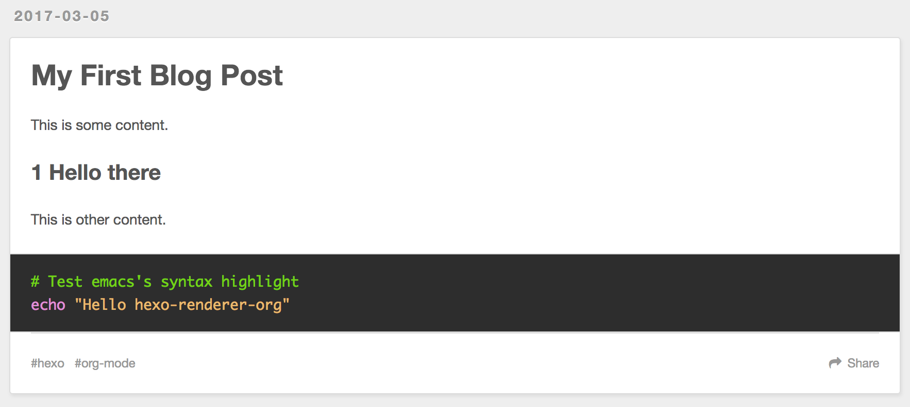
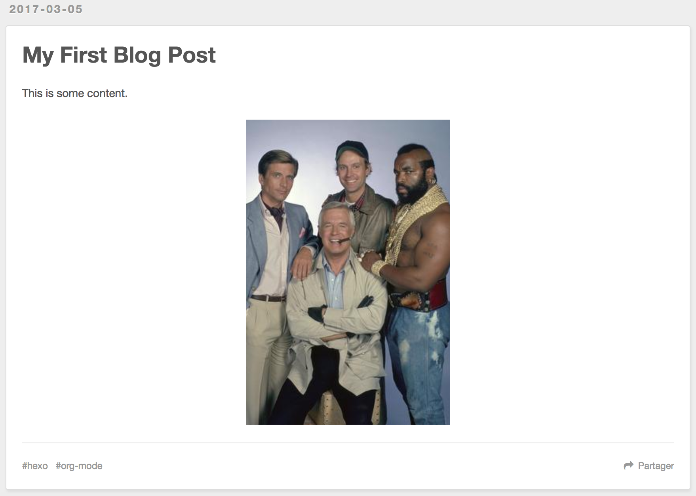

New to blogging with the Hexo framework and org-mode? This tutorial will walk you through installing Hexo, running a local server, and creating your first blog post with org-mode.
Disclaimer
This post is based on Getting Started with the Hexo Blogging Framework by Christopher Martin, which is a really nice post to getting start with Hexo Framrwork.
Installing the Hexo CLI
Install the Hexo command line interface (CLI) globally with the Node.js package manager (NPM):
npm install -g hexo-cli
…once installed, use the hexo init command to create a new blog project:
hexo init my-blog && cd my-blog
This step can take a few minutes while it creates an initial file structure for your site and downloads other Node.js dependencies.
Installing the hexo-renderer-org
Since we want to integrated hexo with org-mode, we need to install renderer plugin to make hexo can recognize the org-mode file. Currently, there's two main org-mode renderer for hexo:
This site is demo project for coldnew/hexo-renderer-org so we'll use his fork instead. Install the renderer is really simple, just type:
npm install https://github.com/coldnew/hexo-renderer-org#coldnew --save
then npm will save information to package.json.
Now we need to modify the _config.yml to add some config for coldnew/hexo-renderer-org, you should add following contents:
# hexo-renderer-org ## Docs: https://github.com/coldnew/hexo-render-org org: emacs: /Applications/Emacs.app/Contents/MacOS/Emacs emacsclient: /Applications/Emacs.app/Contents/MacOS/bin/emacsclient cachedir: ./hexo-org-cache/ theme: tango-dark common: | #+OPTIONS: html-postamble:nil
You need to specify emacs and emacsclient path if they aren't in your shell path.
(Note that on Mac OSX, the emacs command in your path is emacs-22. We need emacs-24 or oabove to make org-mode work properly)
The cachedir is for coldnew/hexo-renderer-org to store the cache files, this will speedup the render process.
Since coldnew/hexo-renderer-org can use emacs to syntax highlight your source code blocks, we setup the theme variable to specify emacs's build-in theme.
org: # to make hexo-renderer-org htmlize content, this should set false htmlize: true
If you only want to use highlight.js to syntax highlight your source code blocks, use following config instead:
highlight: enable: true org: htmlize: false
Starting the server
To view your newly created site in a browser, start the local server:
hexo server --draft --open INFO Hexo is running at http://localhost:4000/hexo-org-example/. Press Ctrl+C to stop.
Didn't work?
Your current working directory must be in the my-blog project folder, or the server will not start.
This starts the server with a few extra options:
--draft: Enable viwable draft posts (by default, drafts are hidden)--open: Open the local site in your browser
A browser should pop up and display the default blog site with a canned "Hello World" post.
You'll want to leave the server running in the terminal while authoring.The server process will watch for changes made to the org-mode source files and automatically generate new HTML files.The server's console log output is also helpful for troubleshooting errors that you may run across.
Heads up
Be aware the some actions require a restart of the server:
- Editing the project's
_config.yml - Installing or updating Hexo plugins with
npm - Making changes to local plugins within the
scriptsfolder(s)
Since most of the authoring time is spent within the org-mode files, a hard restart isn't require too often.
Creating your first post
Since hexo doesn't support org-mode officially, we start our first post on our own. Unlike Markdown which doesn't has a standard, a org-mode post is just like other org-mode post you write before, let's create a file named My-First-Blog-Post.org in ./source/_drafts/My-First-Blog-Post.org and open the file with your favorite editor.
emacs ./source/_drafts/My-First-Blog-Post.org # open and create ./source/_drafts/My-First-Blog-Post.org
Lets add some texts in our new post
#+TITLE: My First Blog Post #+TAGS: org-mode, hexo This is some content. * Hello there This is other content. #+BEGIN_SRC sh # Test emacs's syntax highlight echo "Hello hexo-renderer-org" #+END_SRC
Saving changes to your org-mode files will be automatically detected by the running hexo server and regenerated as static HTML files, but you must refresh the browser to view the changes.
Your post should look something like this is browser:

If you dislike having to manually refresh the browser each time, the hexo-livereload or hexo-browsersync plugins can do it automatically.
To install the hexo-browsersync plugin (my personal favorite):
npm install hexo-browsersync --save hexo server --draft --open # restart the server
Tip
Other Hexo plugins can be easily installed in this same way, using npm.
Many plugins will have configuration that can be tweaked form within the project's _config.yml file. You'll need to consult each plugin's documentation for their specific configuration properties.
In the case of hexo-browsersync, the defaults work fine and don't requre editiog the _config.yml file.
Displaying summary excerpts in listings
Say you have a lenghty post and don't like the fact that the entire article is displayed in the listing pages…
You can mark a spot in your org-mode file with #+HTML: <!-- more --> to hide it from the listing pages. It will be replaced with a "Read more" link that will open the rest of the article content.
#+TITLE: My First Blog Post #+TAGS: org-mode, hexo This is a summary of the post. #+HTML: <!-- more --> This is some content. * Hello there This is other content. #+BEGIN_SRC sh # Test emacs's syntax highlight echo "Hello hexo-renderer-org" #+END_SRC
Inserting images
Images and other asset files can be placed in subdirectories under the ./sources/ folder. Use this picture of the original A-Team from Wikipedia as a test. Download it and save it to this path:
./source/images/Ateam.jpg
Edit your original post, inserting a markdown image link with a reference to /images/Ateam.jpg:
#+TITLE: My First Blog Post #+TAGS: org-mode, hexo This is some content. file:/images/Ateam.jpg
However, this is not the org-mode way to insert image, in https://orgmode.org way, we can use M-x org-toggle-inline-image to show the image in our emacs (GUI).
To make assets be organized in folders for each posts. It requires enabling the post_asset_folder: true setting in _config.yml.
post_asset_folder: true
After enable this feature, let's create a asset directory with the same name as our post:
mkdir -p source/_posts/My-First-Blog-Post wget https://upload.wikimedia.org/wikipedia/en/9/93/Ateam.jpg -O source/_posts/My-First-Blog-Post/Ateam.jpg
then, edit our org-mode file, you can use C-c i to insert file you want;
#+TITLE: My First Blog Post #+TAGS: org-mode, hexo This is some content. file:My-First-Blog-Post/Ateam.jpg
Now you should see something like this in the browser:

Publishing drafts
When it's time to move the draft to a "live" post for the world to see, we just need move file in sources/_drafts folder to sources/_posts folder then add timestamp.
# Move org-mode file mv sources/_drafts/My-First-Blog-Post.org sources/_posts # Move assets mv sources/_drafts/My-First-Blog-Post sources/_posts
Now, edit the sources/_posts/My-First-Blog-Post.org, add Export-options #+DATE: to your post, you can use C-u C-c . add timestamp.
Your posts should look like this:
#+TITLE: My First Blog Post #+DATE: <2017-03-05 Sun 11:45> #+TAGS: org-mode, hexo This is some content. file:My-First-Blog-Post/Ateam.jpg
Finally, prepare the entire site for deployment. Run the hexo generate command:
hexo generate # generates -> ./public/
Everything that is required to run the website will be placed inside the ./public folder. You are all set to take this folder and transfer it to your public webserver or CDN.
Next steps
For next steps, please refer to orginal post: Getting Started with the Hexo Blogging Framework.
If you has any question, feel free to submit issue.